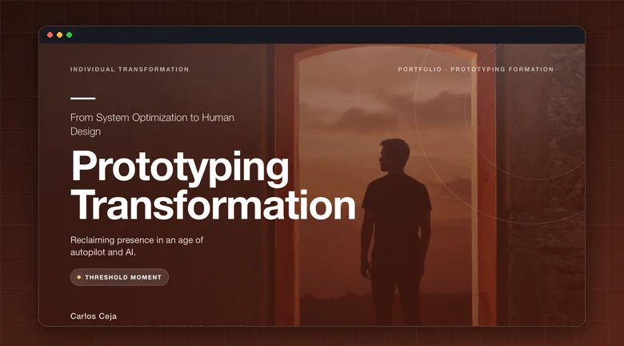

Prototyping Transformation (opens in a new tab)
A six-week personal transformation experiment documenting behavioral design, weekly metrics, and where the data fell short.
Competencies articulated
- Critical Thinking & Analysis
- Technology & Media Literacy
- Creativity & Innovation
- Self & Vocational Development